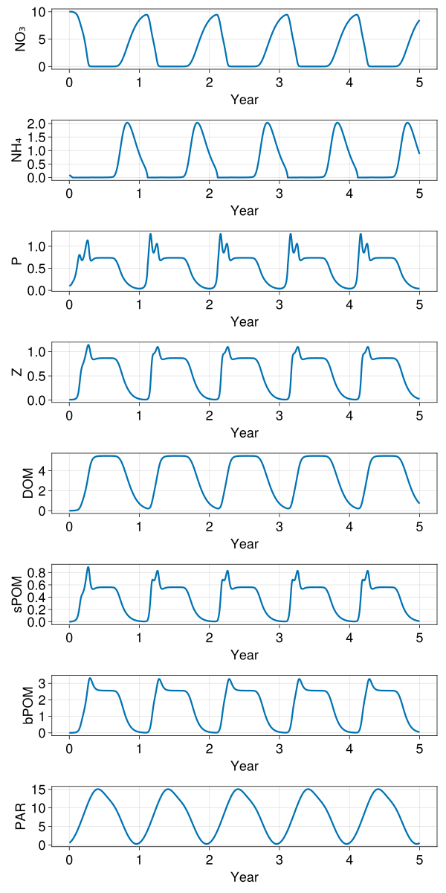

Box model
In this example we setup a LOBSTER biogeochemical model in a single box configuration. This example demonstrates:
- How to setup OceanBioME's biogeochemical models as a stand-alone box model
Install dependencies
First we check we have the dependencies installed
using Pkg
pkg"add OceanBioME"Model setup
Load the packages and setup the initial and forcing conditions
using OceanBioME, Oceananigans.Units
const year = years = 365dayThis is forced by a prescribed time-dependent photosynthetically available radiation (PAR)
PAR⁰(t) = 60 * (1 - cos((t + 15days) * 2π / year)) * (1 / (1 + 0.2 * exp(-((mod(t, year) - 200days) / 50days)^2))) + 2
z = -10 # specify the nominal depth of the box for the PAR profile
PAR(t) = PAR⁰(t) * exp(0.2z) # Modify the PAR based on the nominal depth and exponential decaySet up the model. Here, first specify the biogeochemical model, followed by initial conditions and the start and end times
model = BoxModel(biogeochemistry = LOBSTER(grid = BoxModelGrid()), forcing = (; PAR))
model.Δt = 5minutes
model.stop_time = 5years
set!(model, NO₃ = 10.0, NH₄ = 0.1, P = 0.1, Z = 0.01)Run the model (should only take a few seconds)
@info "Running the model..."
run!(model, save_interval = 100, save = SaveBoxModel("box.jld2"))[ Info: Running the model...
[ Info: Reached 0 seconds
[ Info: Reached 34.722 days
[ Info: Reached 69.444 days
[ Info: Reached 104.167 days
[ Info: Reached 138.889 days
[ Info: Reached 173.611 days
[ Info: Reached 208.333 days
[ Info: Reached 243.056 days
[ Info: Reached 277.778 days
[ Info: Reached 312.500 days
[ Info: Reached 347.222 days
[ Info: Reached 381.944 days
[ Info: Reached 416.667 days
[ Info: Reached 451.389 days
[ Info: Reached 486.111 days
[ Info: Reached 520.833 days
[ Info: Reached 555.556 days
[ Info: Reached 590.278 days
[ Info: Reached 625 days
[ Info: Reached 659.722 days
[ Info: Reached 694.444 days
[ Info: Reached 729.167 days
[ Info: Reached 763.889 days
[ Info: Reached 798.611 days
[ Info: Reached 833.333 days
[ Info: Reached 868.056 days
[ Info: Reached 902.778 days
[ Info: Reached 937.500 days
[ Info: Reached 972.222 days
[ Info: Reached 1006.944 days
[ Info: Reached 1041.667 days
[ Info: Reached 1076.389 days
[ Info: Reached 1111.111 days
[ Info: Reached 1145.833 days
[ Info: Reached 1180.556 days
[ Info: Reached 1215.278 days
[ Info: Reached 1250 days
[ Info: Reached 1284.722 days
[ Info: Reached 1319.444 days
[ Info: Reached 1354.167 days
[ Info: Reached 1388.889 days
[ Info: Reached 1423.611 days
[ Info: Reached 1458.333 days
[ Info: Reached 1493.056 days
[ Info: Reached 1527.778 days
[ Info: Reached 1562.500 days
[ Info: Reached 1597.222 days
[ Info: Reached 1631.944 days
[ Info: Reached 1666.667 days
[ Info: Reached 1701.389 days
[ Info: Reached 1736.111 days
[ Info: Reached 1770.833 days
[ Info: Reached 1805.556 days
Load the output
Check the dependencies for loading and plotting the data are installed
using Pkg
pkg"add JLD2, CairoMakie"using JLD2
vars = (:NO₃, :NH₄, :P, :Z, :DOM, :sPOM, :bPOM, :PAR)
file = jldopen("box.jld2")
times = parse.(Float64, keys(file["values"]))
timeseries = NamedTuple{vars}(ntuple(t -> zeros(length(times)), length(vars)))
for (idx, time) in enumerate(times)
values = file["values/$time"]
for tracer in vars
getproperty(timeseries, tracer)[idx] = values[tracer]
end
end
close(file)And plot
using CairoMakie
fig = Figure(resolution = (800, 1600), fontsize = 24)
axs = []
for (idx, tracer) in enumerate(vars)
push!(axs, Axis(fig[idx, 1], ylabel = "$tracer", xlabel = "Year", xticks=(0:10)))
lines!(axs[end], times / year, timeseries[tracer], linewidth = 3)
end
fig
This page was generated using Literate.jl.